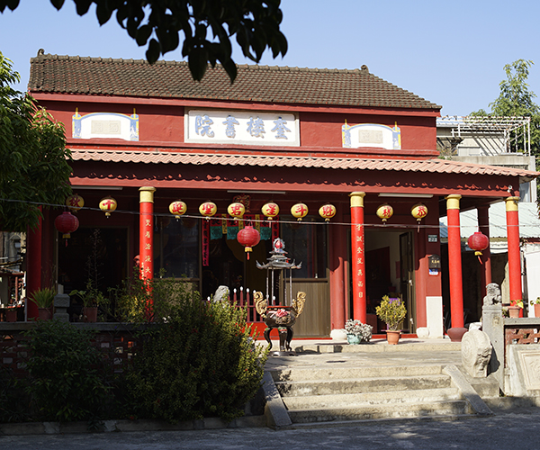
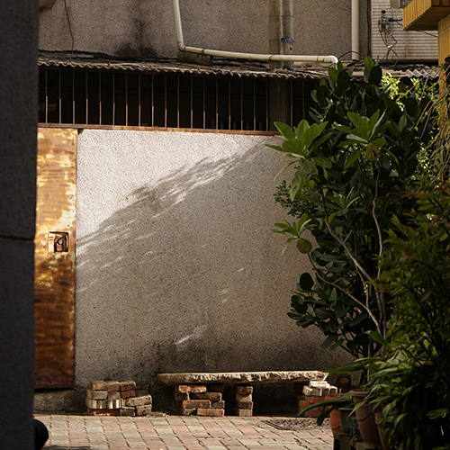
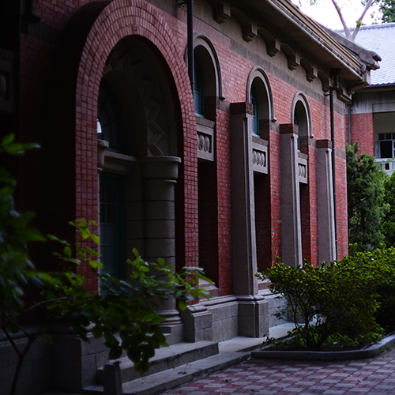
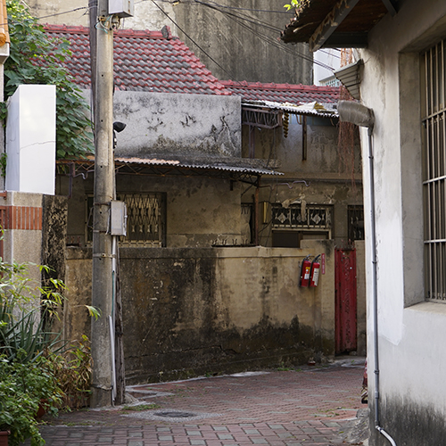
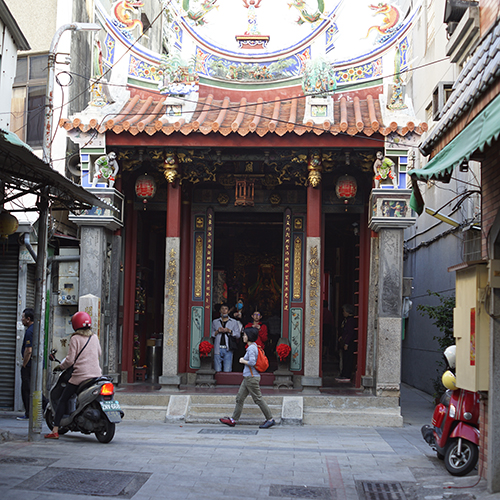
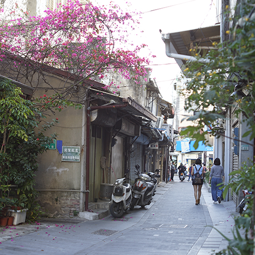

2021/6/28


台南四大書院之一——奎樓書院的前世今身
過往府城曾有四大書院——奎樓、蓬壺、海東與崇文，隨著歲月更迭、城市開發漸漸侵蝕了老建築，現今仍有被保存的...
閱讀故事
2021/6/22
純白的老教堂——太平境馬雅各紀念教會
此教堂落腳之處舊名太平境，有個特別的故事。清代時枋溪曾流經此處，並在此轉了個大彎，許多漂流物便會...
閱讀故事
2021/5/25

午後拐進小巷子，遇見被遺忘的老屋
筆者所居之處面對一條車水馬龍的大路，白天交通嘈雜不堪，令人心煩意亂。因此每當午後時分天氣漸漸令人慵懶時，便會溜達至...
閱讀故事
2021/5/07

高中最美禮堂建築——台南一中小禮堂
歷史悠久的台南一中正準備要迎來百年校慶，其中校內最美麗、歷史最悠久的兩大建物——小禮堂與紅樓，並列三級古蹟...
閱讀故事
2021/4/30
從看西街教會歷史看東西方信仰從衝突到兼容
看西街教會的位址可說是台灣基督教福音的發源地，1865年馬雅各醫生來台傳教行醫的地點就在此處，然而不久後卻因當地...
閱讀故事
2021/4/10

昔日河道今日巷弄，探訪油行尾巷
在清代的古地圖中，可見如今開山路一代巷弄群中有一條蜿蜒的小溪流經此處，此即為枋溪的支流「溝仔底」...
閱讀故事
2021/3/31

從港頭廟遙想五條港繁盛之景
昔日府城西邊有五條港，密集且錯雜的水路是當時的經濟命脈。如今水文遺跡幾乎已不可尋，然而港頭廟的留存仍能讓我們一窺當時...
閱讀故事
2021/3/28

古巷弄裡的九重葛
近幾年旅遊熱度漸長的新美街，是一條從清代就存在的古老街道，我家三代都住在此處。從二樓窗戶望出去，恰巧可以看到一株九重葛近幾年旅遊熱度漸長的新美街，是一條從清代就存在的古老街道，我家三代都住在此處。從二樓窗戶望出去，恰巧可以看到一株九重葛
閱讀故事